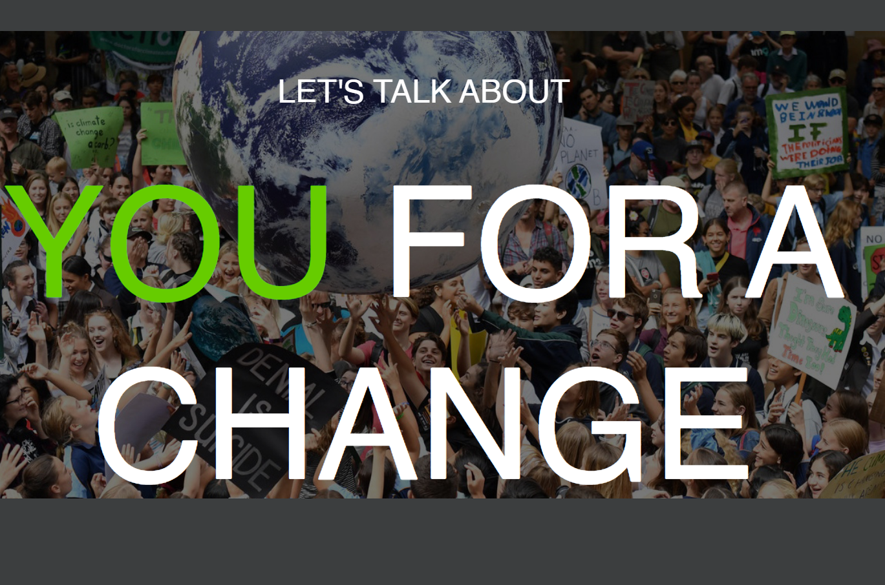
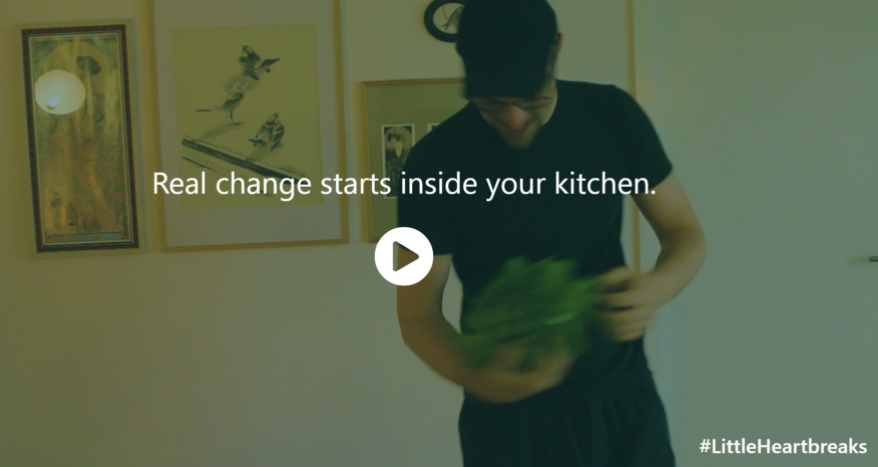
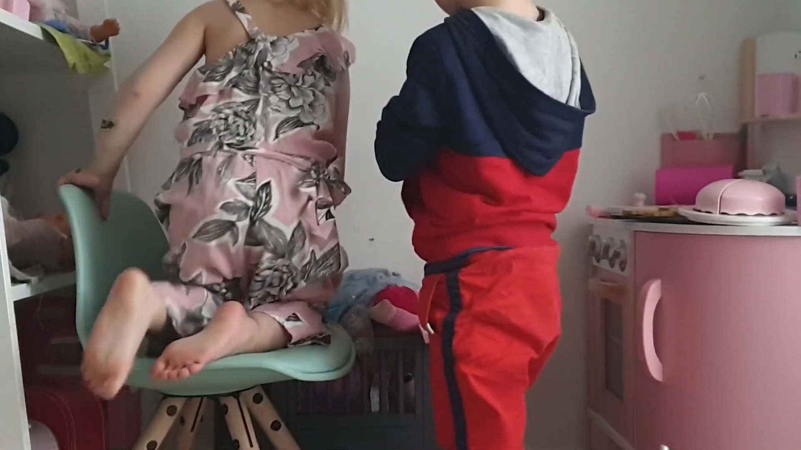
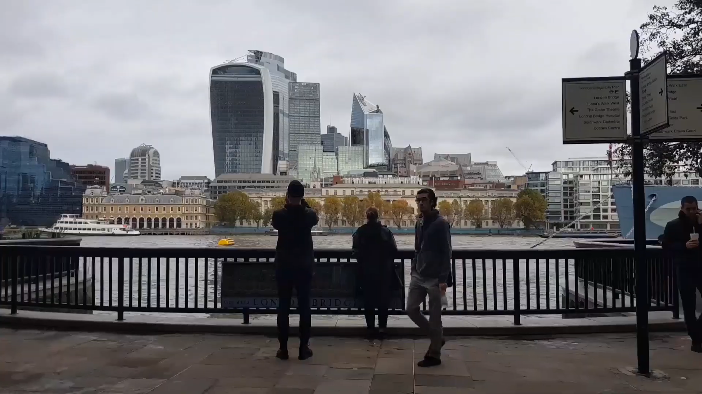

Greenpeace
We were lucky enough to work with Greenpeace, and help promote their Grassroot initiative. Greenpeace
was looking to reach teenagers, and have them use their petitions website. We created a global
initiative, called "You for change" - centered around the idea that teenagers did not feel like
actors in the fight against climate change. See the video
pitch
here
Key ideas: A powerful concept can be easily declined

Food Sharing Copenhagen
Food Sharing Copenhagen was looking to expand their promotion. We created a website and short video
to help promote the idea that "Food waste starts at home". Most people are wasting food from their
fridge by forgetting about them. The campaign "little heartbreaks" meant to humanize your food, and
help create a sense of responsibility toward it.
Key ideas: Don't do salad dream sequence. The editing will never make it
work

A story without words
The assignment was to create "A story without words". Based on the Kuleshov effect, the idea was to
create emotions using editing. While a shot of an empty chair is not meaningful, by the first cut,
the viewer starts to sit poeple they know on the chairs.
Key ideas: Editing is the most powerful tool

Personal Projects
To express my passion for editing, I try to do a video every time I leave Copenhagen and go on
hollidays. You can find here the video for London - and one teaser for a video to Annecy.
Key ideas: Your editing should give rhythm to your videos